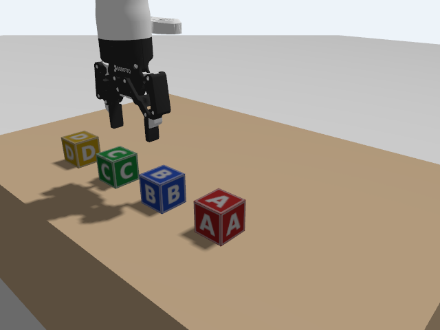
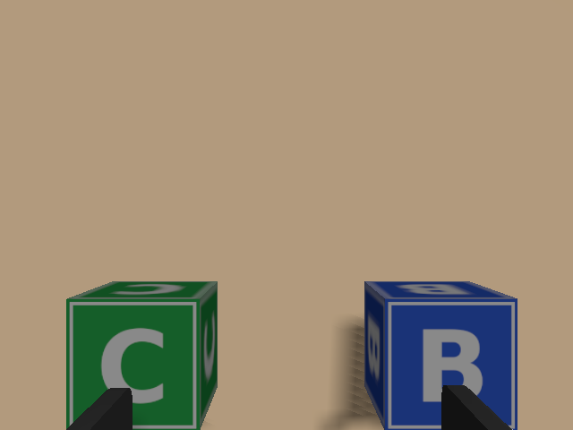

C4 · Sensors and state over ROS
The arm and the lab together, and what a program can read from them: joint states, the true position of every block, and camera images.
1. Goal
Everything D needs to know about the world comes through ROS 2 topics. This lesson puts the arm of C2 into the lab of C3 and looks at three kinds of information:
- joint states, from the controllers (what the arm knows about itself),
- ground truth, from the simulator (where each block really is: a real lab has no such thing),
- images, from cameras (what a real arm would have to use).
At the end you will have:
- started the arm in the lab, with a camera on its wrist,
- turned the block poses into TF frames, so
tf2_echocan answer "where is block A?", - looked at the world through the wrist camera,
- and found a block in an image with a few lines of code, and checked the answer against the ground truth (within 5 mm).
All of it was run in the course container, headless. The Gazebo window was not used (so no screenshots of it); the pictures on this page come from cameras in the simulation. The real arm and its camera were not tried. The camera rates were much lower than their settings (see step 6); the cause was not investigated.
The first test of the upstream simulation (see PLAN.md) had camera topics but no image for 40 s. Two things were needed here: the robot description's default render engine is ogre, and the launch file now passes ogre2 (the engine the rest of Gazebo Harmonic uses); and the simulator must be started with --headless-rendering when there is no window. With both, images arrive. I did not test ogre alone in the new setup, so I cannot say that the engine was the only cause.
2. Concepts
Three sources of state
| What | Comes from | On a real arm |
|---|---|---|
| joint positions, velocities | joint_state_broadcaster reading the hardware component | the same: motor encoders |
| poses of the blocks | Gazebo, through a plugin: ground truth | does not exist: it must be estimated from images |
| images | camera sensors, rendered by Gazebo | real cameras |
Ground truth is the great advantage of the simulator: the true answer is available, so a method that works from images can be checked against it, as step 7 does. The plan of the course is to use ground truth for the logic of Part D and keep the camera path for a later switch to the real arm.
One time, everywhere
Every message here carries a header with a time stamp, and in the simulation that time is the simulated time (/clock): the joint states at 25.6 s, a camera image at 28.5 s. Programs that publish TF must use the same time, so the block poses keep the stamp of the message they came from, which is what block_tf does below.
The two frames that are one
The block poses are in the Gazebo world's frame (frame_id: lab). The arm's own root frame is base_link. The arm is spawned at the origin of the world with no rotation, so these are the same place, and block_tf publishes the blocks as children of base_link without any conversion. If you spawn the arm somewhere else (the x y z arguments of C2), the blocks' coordinates in base_link would differ and a transform would be needed. That is a reason to keep it at the origin in this course.
The pinhole camera
A simulated camera follows the pinhole model: a point at distance d in front of the camera, at lateral offset X, appears at pixel u = cx + fx·X/d. The numbers fx, fy, cx, cy are in the camera_info message (the matrix K). For an image of width w and horizontal field of view θ:
fx = (w / 2) / tan(θ / 2) = 320 / tan(0.5) = 585.8 (the overhead camera: w = 640, θ = 1.0 rad) cx = 320, cy = 240 (the middle of the image)
Turning it around: a pixel and the distance d give the lateral position X = (u − cx)·d / fx. The distance cannot come from one image alone. Here the camera looks straight down at a known height, and the top of a block is at a known height, so d is known.
3. Do it
-
Build
host Open a terminal in the
ros2-tutorialfolder and enter a container (this is T1):docker/run_ros2.shhost Open a terminal in the
ros2-tutorialfolder (this is T1).container (If you built
c2-simandc3-worldin C3, rebuildc3-world: this lesson adds programs and a launch file.)cd code/c2-sim colcon build source install/setup.bash cd ../c3-world colcon build source install/setup.bash -
The arm in the lab
"""The lab world (C3) with the Gen3 standing at its origin (C2), and bridges for the cameras and the block poses. Arguments: gui (Gazebo window), vision (add the wrist camera to the arm).""" import os import tempfile from ament_index_python.packages import get_package_share_directory from launch import LaunchDescription from launch.actions import AppendEnvironmentVariable, DeclareLaunchArgument, IncludeLaunchDescription, OpaqueFunction from launch.launch_description_sources import PythonLaunchDescriptionSource from launch.substitutions import LaunchConfiguration from launch_ros.actions import Node def launch_setup(context, *args, **kwargs): lab = get_package_share_directory("c3_world") sim = os.path.join(get_package_share_directory("c2_sim"), "launch", "sim.launch.py") bridge_args = ["/overhead_camera/image@sensor_msgs/msg/Image[gz.msgs.Image", "/overhead_camera/camera_info@sensor_msgs/msg/CameraInfo[gz.msgs.CameraInfo", "/side_camera/image@sensor_msgs/msg/Image[gz.msgs.Image", "/wrist_mounted_camera/image@sensor_msgs/msg/Image[gz.msgs.Image", "/wrist_mounted_camera/depth_image@sensor_msgs/msg/Image[gz.msgs.Image", "/wrist_mounted_camera/camera_info@sensor_msgs/msg/CameraInfo[gz.msgs.CameraInfo"] bridge_args += [f"/model/block_{k}/pose@geometry_msgs/msg/PoseStamped[gz.msgs.Pose" for k in "ABCD"] # the service that moves a model (used in D2 to carry a block with the hand) bridge_args += ["/world/lab/set_pose@ros_gz_interfaces/srv/SetEntityPose"] world = os.path.join(lab, "worlds", "lab.sdf") if LaunchConfiguration("static_blocks").perform(context) == "true": # D2 and D3: the blocks are static models, moved only by set_pose (see lesson D2). The world file is the # same, with <static>true</static> added to every <include>. text = open(world).read().replace("</include>", " <static>true</static>\n </include>") world = os.path.join(tempfile.gettempdir(), "lab_static.sdf") open(world, "w").write(text) return [ AppendEnvironmentVariable("GZ_SIM_RESOURCE_PATH", os.path.join(lab, "models")), IncludeLaunchDescription( PythonLaunchDescriptionSource(sim), launch_arguments={"world": world, "gui": LaunchConfiguration("gui"), "vision": LaunchConfiguration("vision"), "sensors_in_world": "true", "physics_engine": LaunchConfiguration("physics_engine")}.items()), Node(package="ros_gz_bridge", executable="parameter_bridge", output="screen", parameters=[{"use_sim_time": True}], arguments=bridge_args), ] def generate_launch_description(): return LaunchDescription([ DeclareLaunchArgument("gui", default_value="true"), DeclareLaunchArgument("vision", default_value="false"), DeclareLaunchArgument("physics_engine", default_value="gz-physics-bullet-featherstone-plugin"), DeclareLaunchArgument("static_blocks", default_value="false", description="true: blocks that only set_pose moves (D2)"), OpaqueFunction(function=launch_setup), ])It includes the launch file of C2 with the lab world, and adds a bridge for three cameras and the four block poses. Two arguments go to the C2 file that did not exist in C2:
visionadds a camera (a Realsense) to the arm's wrist, andsensors_in_worldtells it that the world already has theSensorssystem (the camera renderer), so that it must remove the one the robot description would add. Gazebo can have only one: with two the simulator aborts with anOgre::ItemIdentityException("HLMS Datablock already exists"), which is what happened when I first combined them.(The file has three more arguments,
static_blocks,physics_engineand a bridge for the world'sset_poseservice. They are for D2; leave them at their defaults here.)container T1:
ros2 launch c3_world lab_arm.launch.py vision:=trueThis opens the Gazebo window (
gui:=trueis the default, as in C2). Addgui:=falseif there is no display. Wait about 30 s. The ground, the table, the blocks, the two cameras and the arm (gen3) are in the world. -
What is on the ROS 2 side
Open a second terminal (T2:
docker/run_ros2.sh, in theros2-tutorialfolder), then:cd code/c3-world source install/setup.bash ros2 topic list | grep -E "camera|block|joint_states|clock|tf"/clock /dynamic_joint_states /joint_states /model/block_A/pose /model/block_B/pose /model/block_C/pose /model/block_D/pose /overhead_camera/camera_info /overhead_camera/image /side_camera/image /tf /tf_static /wrist_mounted_camera/camera_info /wrist_mounted_camera/depth_image /wrist_mounted_camera/image
(
/dynamic_joint_statesis the same information in another message type.) The camera topics are there because the launch file bridges them; Gazebo has them under the same names. -
Joint states, with simulated time
container T2:
ros2 topic echo /joint_states --once --field headerstamp: sec: 25 nanosec: 609000000 frame_id: base_link ---
The time is the simulated time. (As in C2 the topic runs at 1000 Hz, so
echomay printA message was lost!!!first.) The joint values are as in C2. -
Where is block A? Blocks as TF frames
The poses on
/model/block_X/poseare messages; for the question "where is block A relative to the hand?" the TF tree (A6) is the tool, because it chains transforms. This program publishes each block as a frame underbase_link.#!/usr/bin/env python3 """Turn the ground-truth block poses from Gazebo into TF frames: base_link -> block_A ... block_D. The arm stands at the origin of the Gazebo world, so the world frame and the arm's base_link are the same place.""" import rclpy from rclpy.node import Node from geometry_msgs.msg import PoseStamped, TransformStamped from tf2_ros import TransformBroadcaster class BlockTf(Node): def __init__(self): super().__init__("block_tf") self.broadcaster = TransformBroadcaster(self) for k in "ABCD": self.create_subscription(PoseStamped, f"/model/block_{k}/pose", lambda msg, k=k: self.on_pose(k, msg), 10) def on_pose(self, k, msg): t = TransformStamped() t.header.stamp = msg.header.stamp # simulated time, as in every other message t.header.frame_id = "base_link" t.child_frame_id = f"block_{k}" t.transform.translation.x = msg.pose.position.x t.transform.translation.y = msg.pose.position.y t.transform.translation.z = msg.pose.position.z t.transform.rotation = msg.pose.orientation self.broadcaster.sendTransform(t) def main(): rclpy.init() rclpy.spin(BlockTf()) if __name__ == "__main__": main()// Turn the ground-truth block poses from Gazebo into TF frames: base_link -> block_A ... block_D. // The arm stands at the origin of the Gazebo world, so the world frame and the arm's base_link are the same place. #include <memory> #include <string> #include <vector> #include <geometry_msgs/msg/pose_stamped.hpp> #include <geometry_msgs/msg/transform_stamped.hpp> #include <rclcpp/rclcpp.hpp> #include <tf2_ros/transform_broadcaster.h> class BlockTf : public rclcpp::Node { public: BlockTf() : Node("block_tf"), broadcaster_(this) { for (char k : std::string("ABCD")) { subs_.push_back(create_subscription<geometry_msgs::msg::PoseStamped>( std::string("/model/block_") + k + "/pose", 10, [this, k](const geometry_msgs::msg::PoseStamped::SharedPtr msg) { on_pose(k, *msg); })); } } private: void on_pose(char k, const geometry_msgs::msg::PoseStamped &msg) { geometry_msgs::msg::TransformStamped t; t.header.stamp = msg.header.stamp; // simulated time, as in every other message t.header.frame_id = "base_link"; t.child_frame_id = std::string("block_") + k; t.transform.translation.x = msg.pose.position.x; t.transform.translation.y = msg.pose.position.y; t.transform.translation.z = msg.pose.position.z; t.transform.rotation = msg.pose.orientation; broadcaster_.sendTransform(t); } tf2_ros::TransformBroadcaster broadcaster_; std::vector<rclcpp::Subscription<geometry_msgs::msg::PoseStamped>::SharedPtr> subs_; }; int main(int argc, char **argv) { rclcpp::init(argc, argv); rclcpp::spin(std::make_shared<BlockTf>()); rclcpp::shutdown(); return 0; }container T2:
ros2 run c3_world block_tf.pyros2 run c3_world block_tfLeave it running, open a third terminal (T3, same preparation:
docker/run_ros2.sh, thencd code/c3-worldandsource install/setup.bash), and ask for the blocks:ros2 run tf2_ros tf2_echo base_link block_A ros2 run tf2_ros tf2_echo base_link block_DAt time 28.100000000 - Translation: [0.500, -0.180, 0.325] - Rotation: in Quaternion (xyzw) [-0.000, 0.000, 0.000, 1.000] - Rotation: in RPY (radian) [-0.000, 0.000, -0.000] - Rotation: in RPY (degree) [-0.000, 0.000, -0.000] At time 33.100000000 - Translation: [0.500, 0.180, 0.325]
(Press Ctrl+C after each. At the very start
tf2_echomay first printWaiting for transform ... frame does not existfor a moment. The time stamps depend on when you ask.) These are the numbers of the world file of C3. Nowtf2_echo end_effector_link block_Awould give the pose of the block in the hand's frame, which is what a grasp needs; D2 uses it. -
Look through the wrist camera
Send the arm to a pose with the hand above the table, pointing down. The joint angles come from the IK of B3 for the target position (0.50, 0, 0.55), roll 180°, pitch 0, yaw 90°, which is "hand pointing straight down, fingers along y". A pose has many joint solutions (the null space of B3); this one has joint 3 fixed at 2.5 rad on purpose: the first solution the solver finds has joint 3 at 3.14, right at the ±π edge, which MoveIt later treats as out of bounds (D2 comes back to this). The gripper is opened first. container T3:
ros2 action send_goal /robotiq_gripper_controller/gripper_cmd control_msgs/action/ParallelGripperCommand "{command: {name: [robotiq_85_left_knuckle_joint], position: [0.0]}}" ros2 action send_goal /joint_trajectory_controller/follow_joint_trajectory control_msgs/action/FollowJointTrajectory "{trajectory: {joint_names: [joint_1, joint_2, joint_3, joint_4, joint_5, joint_6, joint_7], points: [{positions: [0.2922, 0.5376, 2.5, -0.8983, 0.3191, -1.7866, 1.3632], time_from_start: {sec: 8}}]}}" ros2 run tf2_ros tf2_echo base_link end_effector_linkGoal accepted with ID: ... Result: ... Goal finished with status: SUCCEEDED ... Goal finished with status: SUCCEEDED - Translation: [0.500, 0.002, 0.550] - Rotation: in RPY (degree) [180.000, -0.002, 90.002]
(The two
send_goalcommands print their usual result lines; press Ctrl+C ontf2_echo.) The hand is where the IK put it: 0.50 m forward, 0.55 m up, rotated by 180°, 0°, 90°. Now take a picture with the wrist camera and one with the side camera (the tool of C3):python3 py/save_image.py /wrist_mounted_camera/image /workspace/wrist.png python3 py/save_image.py /side_camera/image /workspace/side.pngThe files are written to the repository folder (
/workspaceis the repository, mounted in the container), so you can open them from your computer. This is what the test run saw:
The side camera: the arm's hand, pointing down, over blocks B and C (between them, 0.55 m up). The dark shape on the table is the arm's shadow. 
The wrist camera at the same moment: block C on the left and block B on the right, and the tips of the two open fingers in the bottom corners. The camera is on the wrist, so it moves with the hand and always shows what is in front of the gripper. This is the picture a grasping program would work from. The camera also gives a depth image (
/wrist_mounted_camera/depth_image, encoding32FC1: one 32-bit float per pixel, the distance in metres) and acamera_info. -
Find a block in an image, and compare with the truth
The overhead camera looks straight down from 1.3 m. The program below finds the pixels of one block's colour (in the HSV colour space, where a colour is a "hue" number and so does not change much with light and shade), takes their centre, and turns the pixel into table coordinates with the formula of the Concepts. It is a small Python tool, like
save_image.py.#!/usr/bin/env python3 """Find a block in the overhead camera image by its colour and turn the pixel into table coordinates: pixel_to_table.py LETTER (A red, B blue, C green, D yellow) The camera is at (0.65, 0, 1.3) looking straight down (see worlds/lab.sdf); the top of a block is at z = 0.35.""" import sys import cv2 import numpy as np import rclpy from cv_bridge import CvBridge from rclpy.node import Node from sensor_msgs.msg import CameraInfo, Image CAM_X, CAM_Y, CAM_Z = 0.65, 0.0, 1.3 BLOCK_TOP_Z = 0.35 # hue ranges (OpenCV: 0..179) of the four block colours HUE = {"A": [(0, 8), (172, 179)], "B": [(100, 125)], "C": [(50, 80)], "D": [(20, 35)]} def main(): letter = sys.argv[1] rclpy.init() node = Node("pixel_to_table") box = {} node.create_subscription(CameraInfo, "/overhead_camera/camera_info", lambda m: box.setdefault("info", m), 1) node.create_subscription(Image, "/overhead_camera/image", lambda m: box.setdefault("img", m), 1) while rclpy.ok() and len(box) < 2: rclpy.spin_once(node, timeout_sec=0.5) fx, fy, cx, cy = box["info"].k[0], box["info"].k[4], box["info"].k[2], box["info"].k[5] bgr = CvBridge().imgmsg_to_cv2(box["img"], "bgr8") hsv = cv2.cvtColor(bgr, cv2.COLOR_BGR2HSV) mask = np.zeros(hsv.shape[:2], bool) for lo, hi in HUE[letter]: mask |= (hsv[:, :, 0] >= lo) & (hsv[:, :, 0] <= hi) & (hsv[:, :, 1] > 100) & (hsv[:, :, 2] > 60) v, u = np.nonzero(mask) u, v = u.mean(), v.mean() # centre of the coloured pixels d = CAM_Z - BLOCK_TOP_Z # distance from the camera to the top of the block x = CAM_X + (cy - v) / fy * d # image up is +x y = CAM_Y + (cx - u) / fx * d # image left is +y print(f"fx = {fx:.1f} fy = {fy:.1f} cx = {cx:.1f} cy = {cy:.1f}") print(f"block {letter}: {mask.sum()} pixels, centre at pixel u = {u:.1f}, v = {v:.1f}") print(f" table position x = {x:.3f} m, y = {y:.3f} m") if __name__ == "__main__": main()Return the arm to a neutral place first, so it does not hide the blocks (T3, the arm to zeros: it stands up straight, out of the camera's picture), then run it for the four letters:
ros2 action send_goal /joint_trajectory_controller/follow_joint_trajectory control_msgs/action/FollowJointTrajectory "{trajectory: {joint_names: [joint_1, joint_2, joint_3, joint_4, joint_5, joint_6, joint_7], points: [{positions: [0.0, 0.0, 0.0, 0.0, 0.0, 0.0, 0.0], time_from_start: {sec: 6}}]}}" for k in A B C D; do ros2 run c3_world pixel_to_table.py $k; donefx = 585.8 fy = 585.8 cx = 320.0 cy = 240.0 block A: 662 pixels, centre at pixel u = 428.1, v = 330.1 table position x = 0.504 m, y = -0.175 m fx = 585.8 fy = 585.8 cx = 320.0 cy = 240.0 block B: 553 pixels, centre at pixel u = 356.5, v = 330.4 table position x = 0.503 m, y = -0.059 m fx = 585.8 fy = 585.8 cx = 320.0 cy = 240.0 block C: 561 pixels, centre at pixel u = 282.8, v = 331.5 table position x = 0.502 m, y = 0.060 m fx = 585.8 fy = 585.8 cx = 320.0 cy = 240.0 block D: 779 pixels, centre at pixel u = 211.2, v = 330.5 table position x = 0.503 m, y = 0.176 mCompare with the truth of C3 (x = 0.500; y = −0.180, −0.060, 0.060, 0.180): the camera's answer is within 5 mm everywhere (the largest error is 5 mm, in the y of block A).
fx= 585.8 is the number computed in the Concepts. (In the test run the arm was at its zero pose, standing straight up, which is outside the picture.) Where does the error come from? The coloured pixels include the sides of a block, which are seen at a slant away from the middle of the image, and the white letter is not counted, so the centre is not exactly the middle of the top face. This is why a ground-truth channel is useful: you can measure how good a camera method is. -
Move a block, and watch both channels follow
Gazebo can move a model by hand: the
set_poseservice of the world. Move block D 7 cm further to the left, onto y = 0.25 m (from a little above the table, so that it settles): container T3:gz service -s /world/lab/set_pose --reqtype gz.msgs.Pose --reptype gz.msgs.Boolean --timeout 2000 --req 'name: "block_D" position: {x: 0.50, y: 0.25, z: 0.33}' sleep 3 ros2 run tf2_ros tf2_echo base_link block_D ros2 run c3_world pixel_to_table.py Ddata: true At time 42.700000000 - Translation: [0.500, 0.250, 0.325] fx = 585.8 fy = 585.8 cx = 320.0 cy = 240.0 block D: 794 pixels, centre at pixel u = 168.8, v = 330.4 table position x = 0.503 m, y = 0.245 mThe ground truth followed (y = 0.250, z back at 0.325 after the small drop) and so did the camera, which now says y = 0.245 m: 5 mm off again. Where should block D be in the image?
u = cx + (y_cam − y)·fx/d, with the camera at y = 0 (the formula of the Concepts, left = +y):320 − 0.25 × 585.8 / 0.95 = 165.8, and the program found 168.8. The difference, 3 pixels, is the same bias as before.
The sensors are set to 10 Hz (the two cameras of the lab) and 6 Hz (the wrist camera), but ros2 topic hz measured about 7 Hz for the overhead camera when the lab runs alone (C3), and only about 1 to 2 Hz for both overhead and wrist cameras with the arm in the world. The real-time factor stayed at 1.0, so the simulation itself was not slowed down. Whether the cause is the rendering, the bridge copying 0.9 MB images, or both, was not investigated. It does not matter for the lessons (the blocks do not move while the camera is read), but a program that needs a steady video would have to deal with it.
4. Check
- The topic list has
/joint_states, the four block poses and the cameras' images. tf2_echo base_link block_Aprints [0.500, −0.180, 0.325].- The wrist camera shows blocks between the fingers, the side camera shows the hand over the row.
pixel_to_table.pyfinds every block within about 5 mm of the truth.
5. Exercise
Move block B to x = 0.40, y = −0.10 and predict the pixel (u, v) where pixel_to_table.py B will say its centre is. Use u = cx + (y_cam − y)·fx/d and v = cy + (x_cam − x)·fy/d with the camera at (0.65, 0), d = 0.95 m.
Answer
u = 320 + (0 − (−0.10)) × 585.8 / 0.95 = 320 + 61.7 = 381.7 v = 240 + (0.65 − 0.40) × 585.8 / 0.95 = 240 + 154.2 = 394.2
So B should appear about 62 pixels to the right of the middle and 154 pixels below it (image up is +x: a block closer to the arm is lower in the picture). Run in the simulator, the program found the centre at pixel (380.6, 390.3): the same column and 4 pixels from the predicted row, and said table position (0.406, −0.098), that is 6 mm and 2 mm from the truth (a little more than before, because the block is further from the middle of the image and its side faces show more).
gz service -s /world/lab/set_pose --reqtype gz.msgs.Pose --reptype gz.msgs.Boolean --timeout 2000 --req 'name: "block_B" position: {x: 0.40, y: -0.10, z: 0.33}'
sleep 3
ros2 run c3_world pixel_to_table.py B6. Recap
- Three sources of state:
/joint_states(from the controllers),/model/NAME/pose(ground truth from Gazebo, only in simulation), and camera topics (image,depth_image,camera_info). - Everything is time-stamped with simulated time. Poses become TF frames with a broadcaster that reuses the message's stamp (
block_tf), and the arm at the world's origin makesbase_linkand the world the same frame. - Gazebo accepts only one
Sensorssystem. The camera images needogre2and, without a window,--headless-rendering. This solves the missing-image problem noted in the environment test. - Pinhole camera:
fx = (w/2)/tan(θ/2),X = (u − cx)·d/fx. With a known distance a colour blob gives a block position within 5 mm. - Camera frame rates were below the sensor settings (cause not investigated).